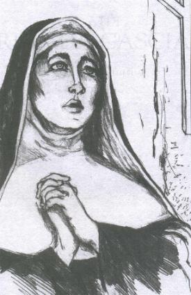
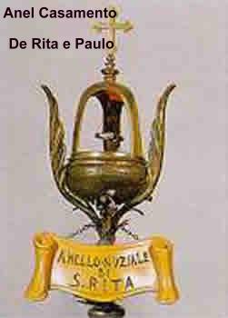

NASCEU NUM LAR FELIZ
CHEGADA AO MUNDO
Rita nasceu em Roccaporena, uma pequena
cidadezinha encravada na Província de Perúgia, como se fosse 
A Igreja de Santa Maria do Povo em Cássia ficava distante cerca de cinco (5) quilômetros de Roccaporena, e o seu Pároco, Padre Ângelo Pelosi foi quem a batizou, para alegria dos pais e satisfação de todos os parentes e amigos que estavam presentes e exultaram com o acontecimento.
Por outro lado, os pais de Rita eram pessoas de certo nível intelectual e com razoável condição financeira, que lhe propiciou os estudos e as alegrias da infância. Em outras palavras, era uma família socialmente mais elevada e influente em toda aquela região. De acordo com o pesquisador Franco Cuomo, com a descoberta de arquivos que retratam a vida na cidade de Cássia naquela época, os Lotti teriam pertencido a uma família de notários. Assim sendo, eram pessoas com certo destaque naqueles anos.
ROCCAPORENA
Na biografia popular de Cavallucci, ele menciona um castelo a cerca de “2 milhas” de Cássia chamado “Rocca Porena”. Todavia deve-se entender como sendo um povoado bem protegido por uma guarnição militar, aquartelada na vizinha torre de Collegiacone, na metade do caminho para Cássia. E quanto as 2 milhas mencionadas, trata-se de uma avaliação aproximada de uma distancia real de 5 quilômetros. Mas, Roccaporena não era um burgo perdido habitado por pessoas primitivas, afastadas da civilização. Havia vida entre aquelas casas, varredores de rua, lojas e provavelmente existiam tabernas. Acima de tudo, percebia-se que havia uma forte presença da autoridade central. Isto porque Roccaporena tinha especial importância para a República de Cássia, não somente por causa da sua situação geográfica, bem estratégica, mas também pelo abastecimento de água. Pois a população de Cássia era abastecida pelo rio “Corno” que nascia no alto pico denominado “Scoglio” ("rochedo" em português) e vinha também da “piscina” do vizinho altiplano de “Ocosce”. Daí a necessidade de todo o vale ser bem protegido. As leis de Cássia reservavam uma particular atenção ao controle dessas águas, com normas rigorosas que previam o emprego de pessoal especializado para prevenir a poluição, a fim de que a água permanecesse potável.
A LENDA DAS ABELHAS BRANCAS
Os pais da menina moravam em casa própria, num terreno que haviam comprado com suas economias. E embora não fossem agricultores, eles cultivavam laboriosamente, plantando e colhendo verduras, legumes e tubérculos, para a sua alimentação e também para comercializar. E assim, quando iam trabalhar, colocavam a menina num cestinho de vime e a deixavam a sombra de uma árvore. Certo dia, a menina um pouco dormia e um pouco agitava as suas mãozinhas, foi circundada por um enxame de abelhas que faziam um zumbido diferente. E curiosamente, algumas abelhas entravam na boquinha da criança e depunham o mel na sua língua, sem picá-la. Tanto que nenhum grito era emitido pela criança que chamasse a atenção dos pais, apenas sorrisos e pequenos gemidos de alegria. Um camponês que roçava o mato num prado distante do berço, cortou profundamente a mão com a foice. Apressadamente saiu em busca de ajuda, pois perdia muito sangue. Passando ao lado da menina no berço viu as abelhas que zumbiam ao redor do rosto dela. Num gesto de caridade espantou as abelhas, com receio de elas fazerem algum mal a criança. Mas ao recolher o seu braço, uma imensa surpresa, constatou que o corte tinha cicatrizado completamente. O fato sendo presenciado pela mãe, preocupadamente se aproximou para se certificar o que realmente acontecia. As abelhas deram uma volta completa ao redor da menina e partiram. Rita estava feliz e apenas sorria e, o camponês agradecia penhoradamente ao SENHOR, pela cura.
Anos mais tarde, quando ela foi para o Mosteiro de Cássia, as abelhas brancas povoaram os muros e de lá nunca mais saíram.
Diz à tradição que o Papa Urbano VIII, conhecido como o Papa das abelhas heráldicas, pediu que lhe trouxesse algumas abelhas do Mosteiro de Cássia. Examinou-as e cingiu uma delas com um fio de seda. Depois ordenou que as soltassem. Aquela abelha foi encontrada novamente em Cássia, significando que havia voltado ao enxame.
O episódio das abelhas brancas foi até lembrado por suas coirmãs do Mosteiro Agostiniano de Cássia, que o descreveram, na breve biografia que enviaram a Roma em 1628, por ocasião da Beatificação de Rita.
FAMÍLIA COMPETENTE
Antonio e Amata Lotti desenvolviam uma tríplice atividade: de pais-educadores, agricultores e a função de “pacificadores” . Esta última função nos leva a concluir que os Lotti sabiam ler e escrever e possuíam certa instrução, porque a função de “pacificadores” não era uma atividade cômoda e nem gratificante, ao contrário, era uma função difícil e penosa, que eles exerciam com dedicação e paixão por amor a CRISTO. Os “pacificadores” faziam parte de uma instituição cristã cuja atribuição era pacificar levando a paz aos contendores, aqueles que disputavam alguma coisa, eliminando as desavenças. A lei da República de Cássia reconhecia essas pacificações que eram escritas num documento público, assinado pelos envolvidos na contenda, no qual estava notificada a paz restabelecida, cada um prometendo evitar para o futuro ofensas recíprocas e se fixando um valor de comum acordo, uma espécie de multa, que seria pago pelos violadores do estabelecido no documento. Então era importantíssima a tarefa dos “pacificadores”, não só sob o aspecto religioso, mas também social, que era exercida com muita competência e caridade pelos pais de Rita, como ela própria, no futuro, revelou ser uma mulher forte que conseguiu aplacar ódios em circunstâncias dramáticas.
FILHA DEDICADA AOS PAIS
Sendo a filha única, cresceu ajudando os pais, e junto deles, recebeu aquele admirável ensinamento de exercitar o amor a DEUS no próximo, ajudando, auxiliando e colaborando sempre, alargando o campo para as suas virtudes, que eram geradas torrencialmente no pequeno espaço de seu imenso coração.
Teve de empenhar as suas tenras energias juvenis para ajudá-los, quer no trabalho do campo, quer na função de pacificadores, quer, sobretudo, no desempenho dos afazeres domésticos. E sem dúvida, estes aumentavam sempre, à medida que Antonio e Amata avançavam nos anos e sentiam diminuir as forças físicas pelo peso da idade. Esta realidade fez com que Rita adquirisse tino e experiência, merecendo a estima de seus pais e a admiração dos parentes e amigos.
Outro componente que contribuiu para formar o caráter da jovem foi à educação cívica, ética e religiosa apreendida dos exemplos de vida cristã de seus progenitores. Eles eram cristãos fervorosos, empenhados na oração e no constante exercício da caridade, na benemérita atividade de pacificadores. E por isso mesmo, foi precisamente nos anos de sua florescente e operosa juventude, que lhe desabrochou no coração aquele incomensurável amor a CRISTO, e a CRISTO Crucificado, que acabou por dominar completamente os seus pensamentos, os afetos e, sobretudo, as obras de sua longa e trágica existência.
GUELFOS E GIBELINOS
Naquela época, estas palavras ressoavam como inimigos, e como notas dramáticas de guerra, que se ouvia no cotidiano. Enquanto no mundo a guerra acontecia entre países, na Itália, a guerra existia entre os próprios irmãos, entre as municipalidades, entre os pequenos e grandes senhorios. No interior de qualquer aldeia, as famílias estavam divididas em dois partidos: “guelfos”, que era favorável ao Papa, e o partido “gibelino”, favorável ao Imperador reinante. Mas, na verdade, na Itália totalmente divida, estes nomes eram mais usados para indicar os alinhamentos de municípios rivais ou de facções opostas no interior dos próprios municípios, do que para indicar os defensores do Império ou do Papa.
AS CAVALGADAS
Por conta da rivalidade acesa que existia, acontecia as “Cavalgadas”. Eram formadas por grupos de jovens, na idade de 15 a 18 anos ou pouco mais, que armados e a cavalo, faziam rápidas incursões de acordo com os costumes locais e os estatutos republicanos, aos territórios de uma comuna ou de um domínio limítrofe, de partido contrário, fazendo pilhagem e devastação, por represália ou como advertência. As “Cavalgadas” duravam uma noite. Geralmente partiam a tarde e voltavam no dia seguinte pela manhã. Os contragolpes da outra facção sempre aconteciam e assim, de um lado e de outro, prolongavam-se as incursões por todo o ano, determinando uma sucessão inexorável de vinganças e morticínios. Então se percebe que o trabalho dos “pacificadores” era árduo e constante, porque objetivavam, sobretudo, levar paz a aqueles corações revoltados.
QUERIA SER RELIGIOSA
Antonio Lotti e Amata Ferri já estavam acostumados a enfrentar estas dificuldades, pois eram pacificadores há muitos anos. Rita ajudava aos seus pais, mas desde criança também dedicava um tempo precioso às orações, num precioso contato com o SENHOR, mantendo-O presente em sua vida.
A tradição confirma o acontecimento de um fato que testemunha o fervor, a caridade e a sincera disposição da jovem Rita, quando fazia as suas orações, num verdadeiro e autêntico encontro com DEUS. O fato foi testemunhado pela senhora Diamante que morou na casa quase dois séculos depois, e faz parte do processo canônico de 1626. Quando prestou depoimento tinha cerca de 60 a 63 anos de idade, e um marido chamado Píer Vincenzo. Desde menina morava naquela casa com os seus pais: Giacomo Santo e Allegrezza. O acontecimento milagroso era também descrito por muitas pessoas que viveram naquela época e afirmava que Rita quando rezava num pequeno sótão de sua casa que tinha uma pequena janela de onde descortinava o Céu, recebia a visita de um Anjo, provavelmente o seu Anjo da Guarda, que se ajoelhava ao seu lado e rezava com ela. Conforme consta do processo canônico, as pessoas que habitavam a casa nos anos seguintes a sua morte, realizando um conserto no telhado, fecharam a “janelinha do Anjo”. Mas no dia seguinte, o telhado continuava “bem arrumadinho e com a janelinha aberta”, ou seja, a alvenaria que fizeram para fechá-la, na manhã seguinte não existia mais.
Desde pequena, Rita era muito piedosa e cuidava com admirável zelo de sua religiosidade, participando das funções religiosas, rezando as suas orações e ouvindo as pregações e homilias com atenção e interesse.
Os sacerdotes franciscanos e agostinianos buscavam fazer uma forte e intensa pregação, estimulando a devoção ao Senhor JESUS, Homem de DEUS e também a devoção ao “Bom JESUS”. Esta devoção era divulgada com muito entusiasmo e fervor, principalmente era pregado com muita paixão e convicção pelo franciscano Bernardino de Siena, que foi um notável e extraordinário Santo no século XV.
A precoce vocação religiosa de Rita desabrochou sob a proteção de três Santos: São João Batista, o precursor de JESUS; do grande Bispo de Hipona e Doutor da Igreja, Santo Aurélio Agostinho e do taumaturgo agostiniano Nicolau de Tolentino, que eram venerados por ela na Igreja de Santo Agostinho, quando vinha de Roccaporena, passando por Ocosce e alcançava a cidade de Cássia.
O NOIVADO
Não existe qualquer documento que faça referências com detalhes sobre este acontecimento. Todavia, os três: Rita, Antonio e Amata eram muito unidos, tinham uma existência harmoniosa e se auxiliavam mutuamente ao longo do cotidiano. Então, esta realidade nos faz imaginar, que quando apareceu o jovem Paulo e, de acordo com o costume da época, foi conversar com o senhor Antonio e revelou o interesse pela filha dele, como todo pai cuidadoso e responsável quis pensar no assunto. Inicialmente deve ter mencionado o fato a Rita e a sua esposa Amata sobre a “novidade do pedido”. E na continuidade, o pai deve ter percebido, pelas reações da filha, que o jovem pretendente havia “balançado” o coração dela. Por isso mesmo, ele quis saber quem era Paulo e quais eram os seus projetos e qual era o seu trabalho. Antonio ficou sabendo que o jovem era enérgico e exigente, e comandava uma patrulha militar. Era um pouco áspero, mas tinha uma descendência de familiares dignos e corretos. Assim, tendo avaliado as possibilidades, o pai e a mãe foram conversar com a moça a respeito do pretendente, já com a intenção de conceder a filha em matrimônio. Por sua vez, ela tinha apenas 12 anos de idade, quando os seus pais decidiram prometê-la em casamento ao conterrâneo Paulo Mancini, que era filho do senhor Ferdinando. Rita, anteriormente, olhava e imaginava a possibilidade de ser uma monja agostiniana, mas em face da decisão de seus pais, provavelmente deve lhes ter falado: “Caros pais, há tempo decidi doar-me totalmente a DEUS, porém, se pensaram em me conceder como esposa ao jovem Paulo Mancini di Ferdinando, aceito fazer a vossa vontade”.
Por que motivo a jovem Rita havia despertado uma paixão tão forte no coração do fogoso Paulo? Na verdade, ela adolescente possuía ainda os olhos da infância e sua inocência perturbava. Crescida entre pessoas experientes, contudo, nunca se deixava desorientar pelos acontecimentos. Por isso, não ficou deprimida com aquele acontecimento, mas apenas perturbada com aquele inesperado anúncio.
Ela era uma menina pequena de estatura, mas imensa em qualidades, tinha os olhos castanhos escuros, cabelos castanhos e um sorriso todo especial.
E Paulo? Quem era aquele jovem que aspirava com tanto ardor às núpcias com a única filha dos idosos Lotti? Alguns biógrafos antigos o definem como “homem feroz, quase um leão”, tinha costumes muito severos. Estas eram “qualidades” que somente os íntimos dele conheciam, por que se os pais de Rita soubessem, não permitiria o matrimônio.
Entretanto, todos os biógrafos admitem com convicção, que após o matrimônio, Rita e Paulo “viveram sempre juntos, cultivando um grande amor”. Afirma a tradição, que ela conseguiu superar todas as dificuldades de relacionamento e viveu com ele “em boa concórdia, sendo admirada por todos” e na realidade, foram muito felizes.
Paulo di Ferdinando era militar, possuía o grau de oficial e comandava a guarnição de Collegiacone, composta de cinquenta soldados que ocupavam o Castelo-Fortaleza que tinha uma alta torre quadrada, onde as sentinelas se revezavam. Ele era do partido político gibelino, como também era a República de Cássia. Na verdade, Cássia era o refúgio dos gibelinos que foram banidos do ducado de Spoleto. E ali, eles eram também protegidos pela poderosa família dos Chiavano e dos Fraticelli, que eram rebeldes ao poder eclesiástico.
O MATRIMÔNIO

As famílias de Paulo e de Rita eram abastadas, mas adequaram-se de boa vontade as determinações das leis e dos costumes, que recomendavam evitar a ostentação de luxo, assim como esbanjamentos com gastos supérfluos e, sobretudo, evitar as rivalidades.
Considerando a religiosidade convicta de Rita e de seus pais, e a religiosidade menos convicta, porém igualmente empenhada, da família Mancini, podemos acreditar que o Noivado e o Casamento foram celebrados na Igreja Paroquial de San Montano. Com certeza a cerimônia do Noivado começou na casa dos pais de Rita onde foi elaborado o contrato referente aos bens (os dotes) dos cônjuges, e depois completada na Igreja com a liturgia nupcial. Isto significa dizer, que as núpcias foram abençoadas pelos parentes, amigos e conterrâneos que brindaram a saúde e a felicidade do casal, mas, antes de tudo, as núpcias foram abençoadas por DEUS que derramou sobre os dois as preciosas graças do Sacramento do Matrimônio.
RESIDÊNCIA DE RITA
Embora a casa conjugal estivesse bem próxima da casa de seus pais, mesmo assim ela sentiu a dor da separação, porque amava muito o seu pai e sua mãe. Quanto ao estilo, à casa dos pais de Rita era de um único pavimento térreo, tinha dois quartos, sala, cozinha e instalações sanitárias, com um pequeno terraço coberto, que tinha aquela janelinha por onde entrava o Anjo para visitá-la. Aquele recanto era o seu “Santuário particular” e onde permanecia rezando todo o seu tempo disponível.
Quanto à morada conjugal do casal, conforme está descrito no processo canônico para a Beatificação de Rita, era uma “domuncola” (uma casinha ou casa pequena) por sua humildade. Esta casinha ainda existe, pois não foi destruída pelo grande terremoto de 1599, e está situada entre o Scoglio e a Gruta de Ouro, isto é, bem à entrada de Roccaporena, à direita de quem vem de Cássia. Em 1626, a casinha foi encontrada intacta pela comissão do processo de Beatificação que foram inspecionar os locais por onde Rita viveu. Nesta casinha ela viveu o tempo de casada e de viúva, até vestir o hábito monacal.
Desse modo, modestamente e com dignidade, como viveram os seus pais, Rita e Paulo cultivaram o seu tranquilo e honesto amor.
Existe também uma prova documental (encontrada por Vittorio Giorgetti, inclusive a escritura de compra de um moinho fora de Roccaporena na direção de Collegione) que a família Mancini (ou seja, Rita e Paulo) era os proprietários do citado moinho no rio Corno, de onde tiravam os rendimentos para as despesas da família. Esta realidade nos conduz a compreender, que alguns anos depois de casado, quando aconteceu o nascimento dos filhos, as próprias circunstâncias impuseram ao casal a exigência de maior estabilidade, não somente econômica. Significa dizer que Paulo deixou aquele trabalho difícil de militar e decidiu viver como cidadão civil, dedicado ao seu trabalho, sendo o moinho a fonte de seus recursos financeiros. E sendo a atividade do moinho uma das mais seguras e rendosas da época, teria imposto a Paulo hábitos e horários regulares, em sintonia com sua mudança de caráter e atitudes, tornando-se mais tranquilo e atencioso. E por esse motivo bem compreensível, ele não andava mais armado, porque não era mais um militar.
Todavia, um pesado luto ocorreu logo nos primeiros anos do matrimônio de Rita, com a morte de Antonio e Amata, seus pais, que não tiveram nem a oportunidade de ver os dois netinhos, nascidos algum tempo depois.
Em clima profundamente religioso, Rita acolheu o último suspiro de seus queridos progenitores, acomodando-os nos caixões e acompanhando-os a última morada. Eles foram sepultados, como era o costume, no piso da antiga Igreja Paroquial de San Montano, a poucos passos de sua residência.